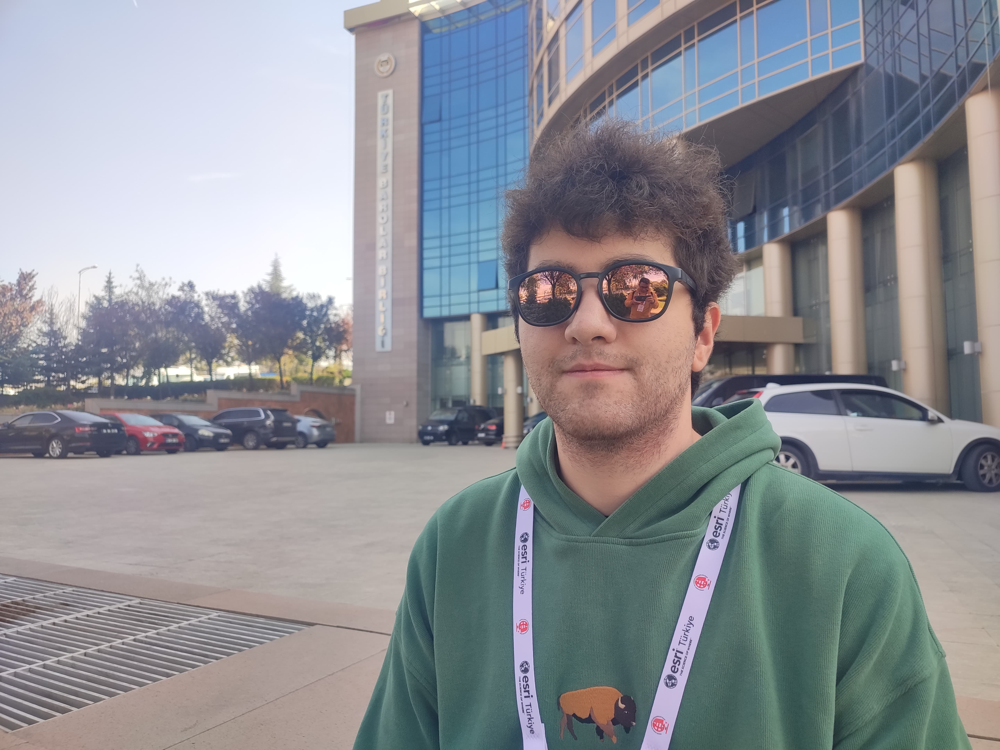

ABOUT ME
Welcome to my personal website! This site contains some information about me, along with links and a location where you can get in touch with me.
Internship Experiences
Mescioğlu Engineering and Consulting Inc.
I completed my first internship at Mescioğlu Engineering and Consulting Inc., where I worked on the production of 1/1000 and 1/5000 scale base maps, regularly conducted in Istanbul. By the end of the internship, my proficiency in MicroStation and PCI Geomatica applications significantly improved, and I gained valuable experience in teamwork.
General Directorate of Forestry (OGM)
For my second internship, I worked at the General Directorate of Forestry (OGM), a government institution. During this internship, I gained experience with the widely-used Netcad GIS application in Turkey. I also observed how operations are managed within a large government agency and noticed that, compared to my first internship, this experience involved more individual work.
Hobbies

Basketball
I enjoy playing basketball regularly with my friends, brother, and a professor. It's a great way to stay active and have fun!
Computer Games
I grew up with computers and video games for as long as I can remember. After discovering the internet, I started playing online games and I still actively play today.